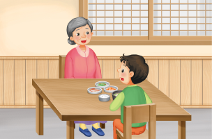

1번
다음 일기에서 법에 어긋나는 행동을 고르세요.

제목: 할머니와 외식
O월 O일 날씨: 맑음
오늘은 할머니와 식당에 가서 밥을 먹었다.
1
식당 테이블이 지저분해서 일하시는 분에게 닦아달라고 부탁했다.
그리고 주문받는 분에게
2
메뉴판에서 내가 좋아하는 된장찌개를 골라 주문했다.
맛있는 된장 찌개를 먹는데 소란스러워서 여쭤보니
3
손님이 음식값을 내지 않고 갔다
고 했다. 배불리 먹었지만
4
내가 싫어하는 반찬은 남겼다.
5
할머니께 다음에도 외식을 하자고 졸랐다.
할머니와 함께하는 다음 외식이 기다려진다.